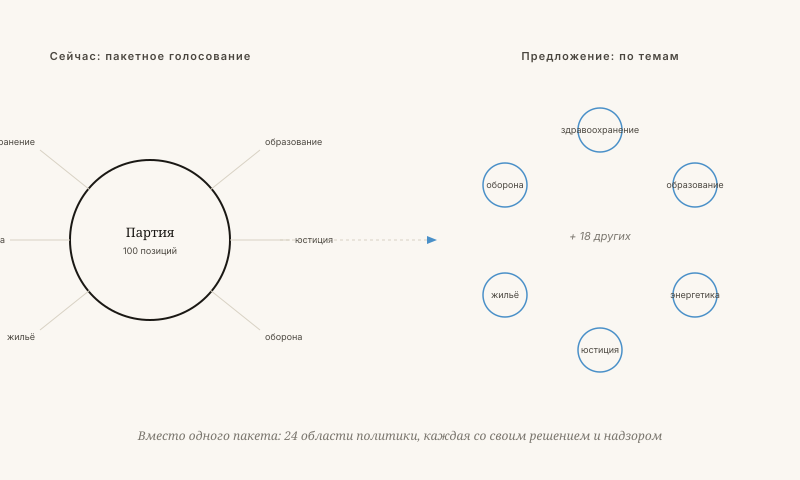

Что не так с партийной политикой?
Альтернатива: Nova Democratia — решения по каждому вопросу отдельно, принимаемые теми, кто имеет что сказать по существу.
Якобус ван Мерксштейн · 12 мин чтения · 23 мая 2026

Пустой зал — в ожидании решений по каждому вопросу
Три недуга партийной политики
Партии возникли в девятнадцатом веке для объединения интересов в эпоху, когда избиратели не имели доступа к информации. Сегодня у каждого избирателя есть телефон со знаниями большими, чем у министра в 1950 году.
Nova Democratia: решения по каждому вопросу
Nova Democratia — это форма управления, при которой решения принимаются по каждому вопросу отдельно теми, кто доказал свою компетентность и поддержку именно в данной области. Без партий, но с 24 сферами политики, каждая со своим циклом предложений, экспертизы и решения.
Три ключевых принципа: измеримое соотношение цены и результата, независимые контрольные проверки, и благосостояние как главная цель — в которую входят также уважение и самооценка.

Что, если на повестке — ограничение скорости?
При нынешней системе партии голосуют за или против, исходя из своего общего профиля. При Nova Democratia вопрос разбивается на измеримые составляющие.
Никакой партийной дисциплины, никакой идеологии
Только когда все эти данные собраны, граждане в данной сфере принимают решение. Честный выбор на основе измеримых оснований.
Это не утопия — но и не без риска
Три главных риска реальны и заслуживают внимания:
- Кто охраняет охранников? Кто определяет, честно ли проведена контрольная проверка?
- Фрагментация. Если каждый вопрос решается отдельно, как сохранить целостность? Кто-то должен следить за связностью.
- Время. У граждан нет времени обдумывать 24 темы. Как предотвратить ситуацию, при которой голосуют только лоббисты?
Связь с семимерной концепцией
В семимерной модели общество — это система со множеством осей одновременно. G: то, что работает на муниципальном уровне, может провалиться на государственном. N: множественность выборов по странам — это поле для экспериментов, а не роскошь. Партийная политика уничтожает эту множественность. Nova Democratia её восстанавливает.
Что не так с партийной политикой?
Nova Democratia предлагает принимать решения по каждому вопросу отдельно — с измеримым соотношением цены и качества и без пакетного голосования.
Партии возникли в девятнадцатом веке для консолидации интересов, когда у избирателей не было доступа к информации. Сегодня у каждого избирателя в кармане телефон с объёмом знаний, превышающим информированность министра 1950 года. Тем не менее мы по-прежнему остаёмся в плену трёх структурных недостатков: пакетного голосования (Вы получаете десять вещей, которые Вам не нужны, чтобы получить две, которые нужны), лояльности сверх содержания (политики голосуют не так, как думают, а так, как требует партия) и четырёхлетней иллюзии (политика, горизонт которой — следующие выборы, а не следующее поколение).
Nova Democratia — форма правления с 24 политическими областями, каждая из которых имеет собственный цикл предложений, проверки и решения. По каждой теме решают те, кто доказал компетентность и поддержку именно в этой области. Три ключевых принципа: измеримое соотношение цены и качества, независимые выборочные проверки и процветание как главная цель, в которой уважение и достоинство также принимаются в расчёт.
Конкретный пример: при обсуждении ограничения скорости сначала рассматриваются четыре измеримых вопроса — безопасность дорожного движения (от 50 до 70 меньше погибших в год), время в пути (12 миллионов дополнительных часов в год), CO₂ и экономические интересы. Лишь когда эти цифры представлены, граждане в данной политической области принимают решение.
Не утопия, но и не без риска
Три риска реальны и заслуживают внимания: кто сторожит сторожей; как при 24 отдельных темах сохраняется целостность системы; и как не допустить, чтобы голосовали только лоббисты. В концепции семи измерений Nova Democratia восстанавливает N-значение — то множество выборов, которое партийная политика уничтожает.